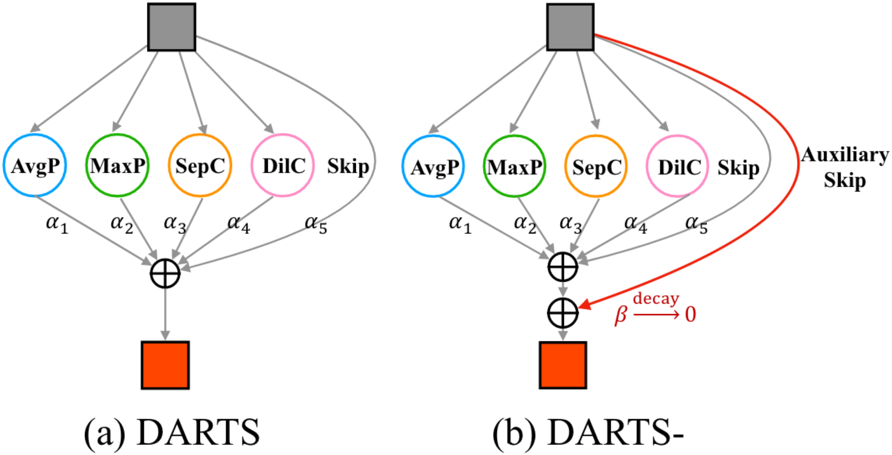

Shun Lu 陆顺PHD Candidate Email: lushun901@gmail.com
|

|
News
- 2021.10.16: Paper DU-DARTS is accepted by BMVC 2021 !
- 2021.09.29: Paper TANSP is accepted by NeurIPS 2021 !
- 2021.05.26: Our team ranked 2nd among all teams in CVPR 2021 NAS Track 2: Performance Prediction Track !
- 2021.05.26: Our team ranked 2nd among all teams in CVPR 2021 NAS Track 1: Supernet Track !
Biography
Shun Lu holds a Bachelor's degree from Beijing University of Science and Technology (USTB) and I am currently a PhD student at the Institute of Computing Technology (ICT), advised by Yu Hu. My research focuses on the field of computer science, with a particular emphasis on developing algorithms to solve problems in artificial intelligence and machine learning. I am passionate about exploring new approaches to these problems and have been fortunate enough to work on several exciting projects during my time at ICT. I am excited to continue my research in this field and to contribute to the advancement of computer science and technology.
My research interests include semantic segmentation and neural architecture search. With regards to semantic segmentation, I am interested in developing more accurate and efficient algorithms for image and video analysis. Specifically, I focus on designing effective neural networks to better understand the semantic meaning of visual data.
Regarding neural architecture search, I am working on developing automated methods to design and optimize neural network architectures. This involves exploring different network topologies and architectures to find the optimal solution for a given task. I believe that this research will have significant impact on the development of artificial intelligence and machine learning, and I am excited to be a part of this exciting field.
Selected Publications
|
DU-DARTS: Decreasing the Uncertainty of Differentiable NAS |

|
TNASP: A Transformer-based NAS Predictor with a Self-evolution Framework |
|
DDSAS: Dynamic and Differentiable Space-Architecture Search |
|
Dynamic coherent diffractive imaging with a physics-driven untrained learning method |

|
SpeechNAS: Towards Better Trade-off between Latency and Accuracy for Large-Scale Speaker Verification |
|  |
DARTS-: Robustly Stepping out of Performance Collapse Without Indicators |
|
MixPath: A Unified Approach for One-shot Neural Architecture Search |
Competitions
-
CVPR 2021 NAS Track 1: Supernet Track, Rank 2nd among all teams from the world.
Shun Lu, Longxing Yang, Jilin Mei
-
CVPR 2021 NAS Track 2: Performance Prediction Track, Rank 2nd among all teams from the world.
Shun Lu, Jixiang Li, Jianchao Tan
Academic Services
-
Conference Reviewer
IEEE / CVF Computer Vision and Pattern Recognition Conference (CVPR) 2022
European Conference on Computer Vision (ECCV) 2022
International Conference on Computer Vision (ICCV) 2023
International Conference on Machine Learning (ICML) 2022, 2023
Neural Information Processing Systems (NeurIPS) 2022, 2023
Honors and Awards
2023, 中国科学院大学三好学生标兵
| © Shun Lu | Last update: June 2023 |